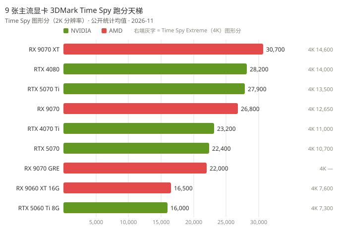
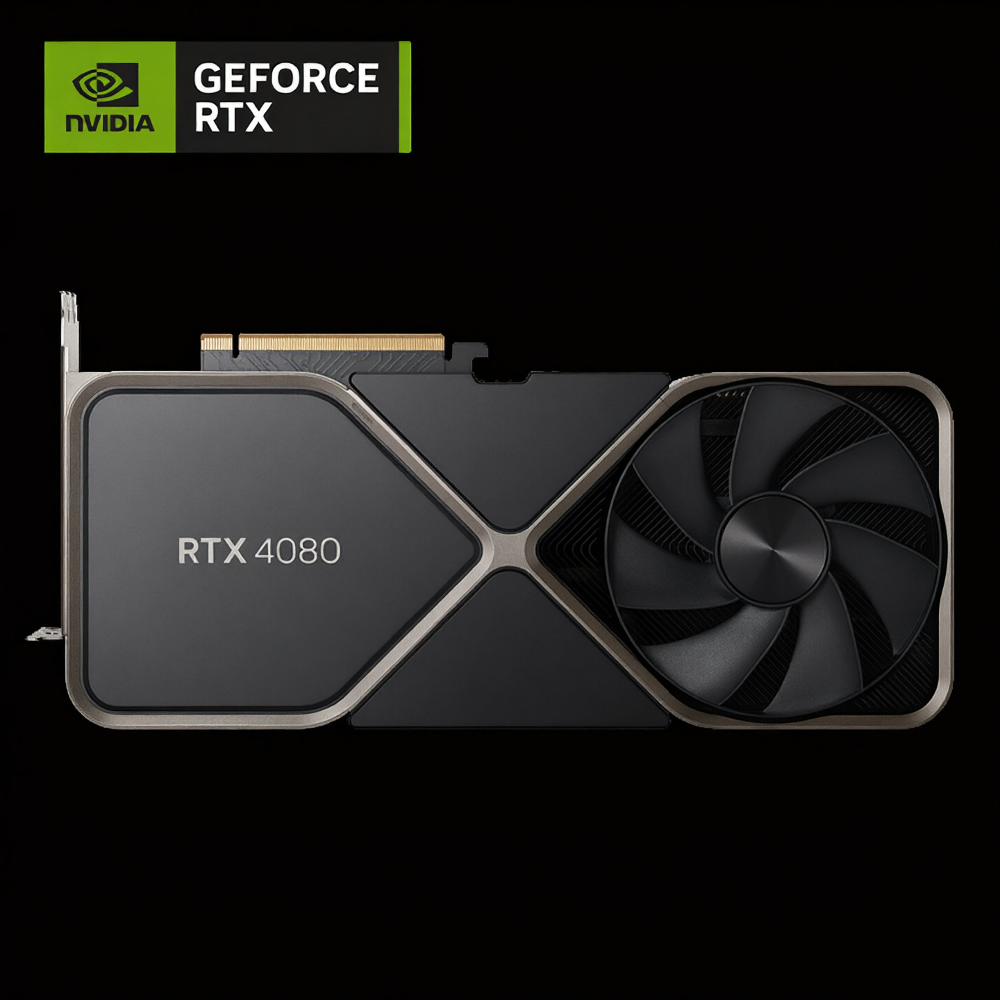
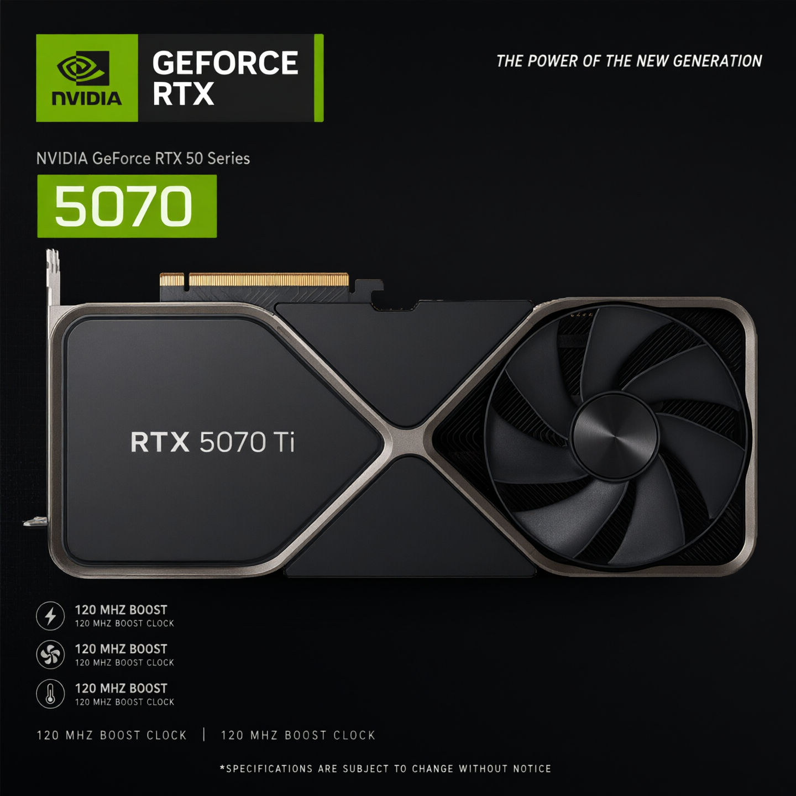
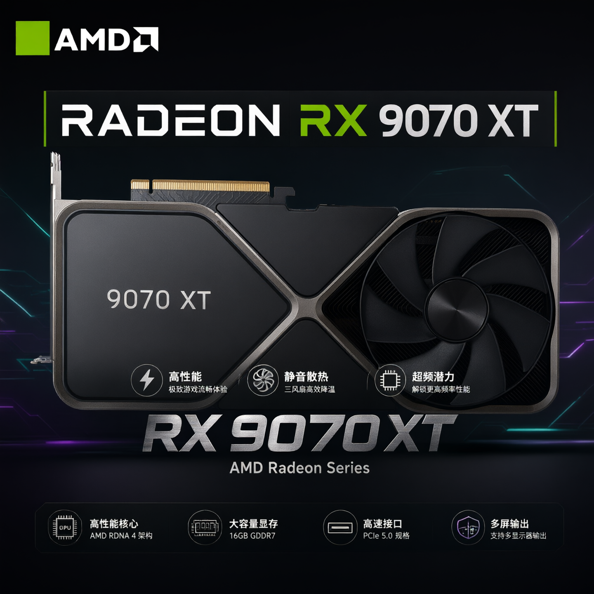
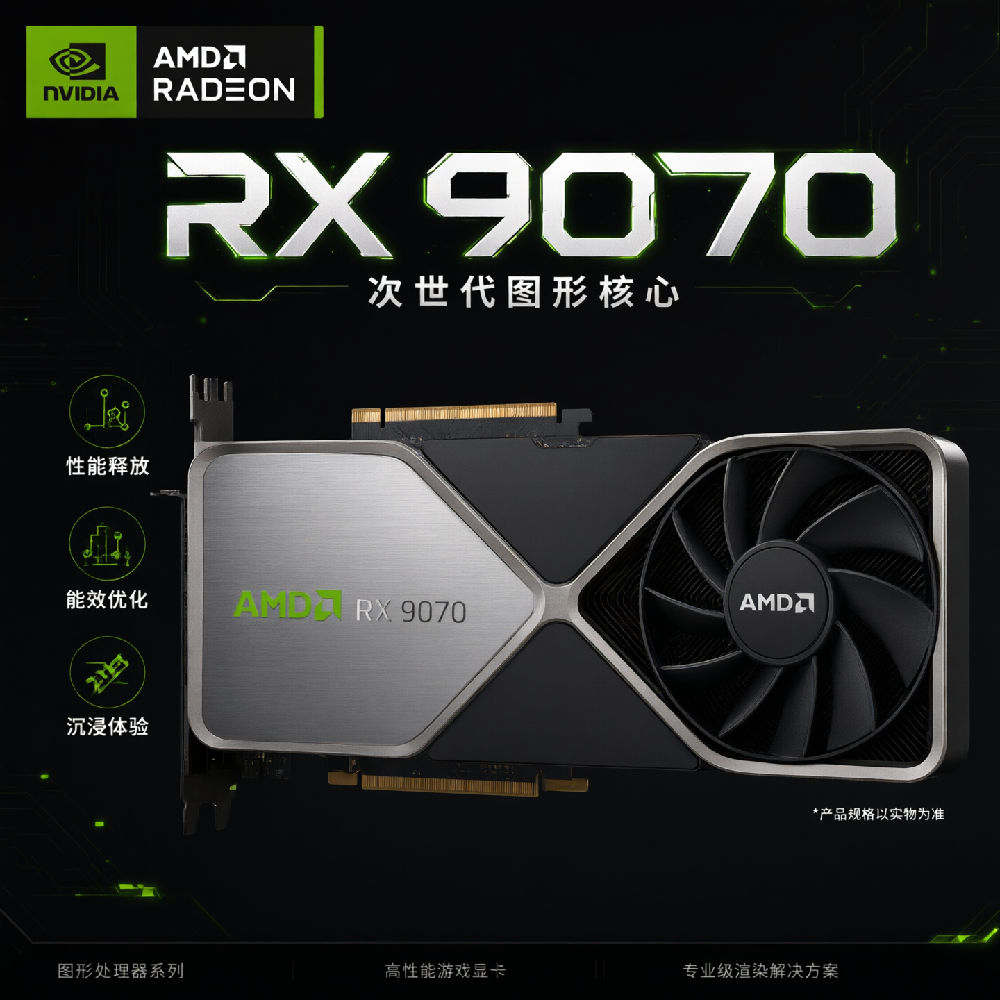
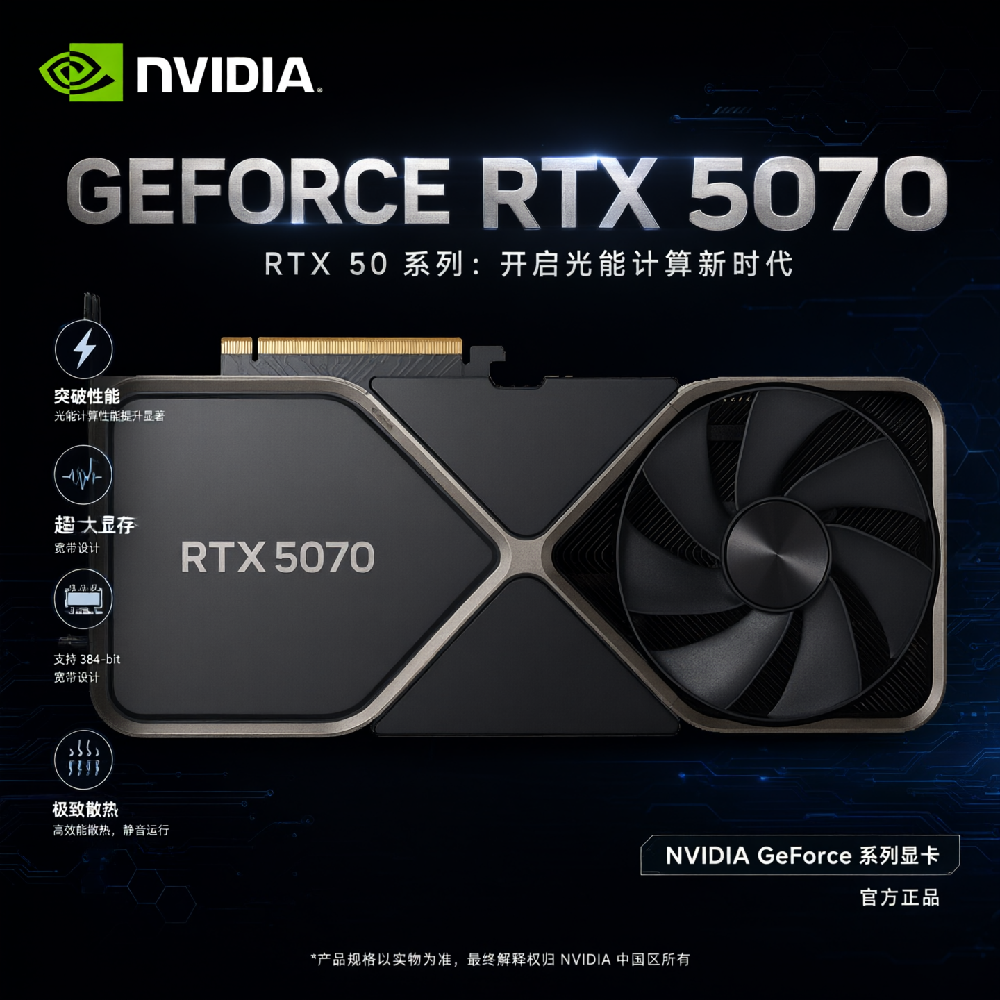
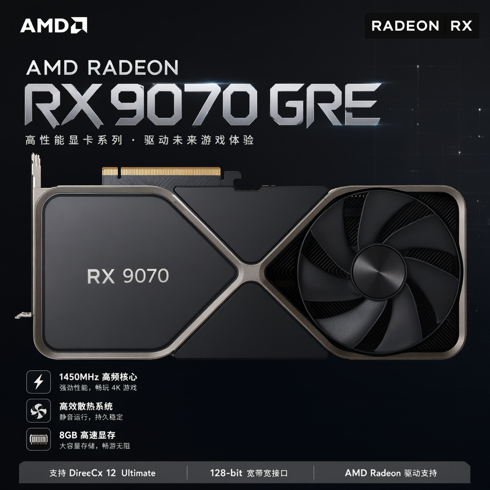
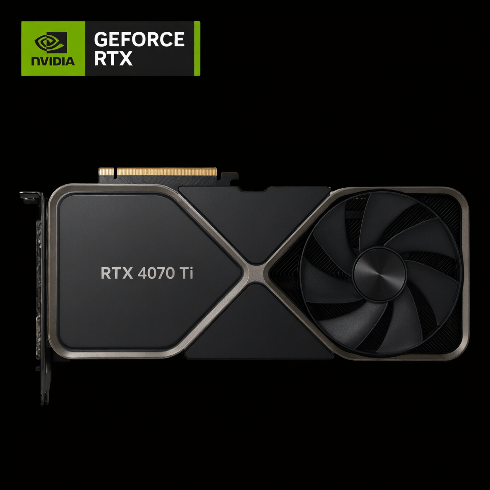
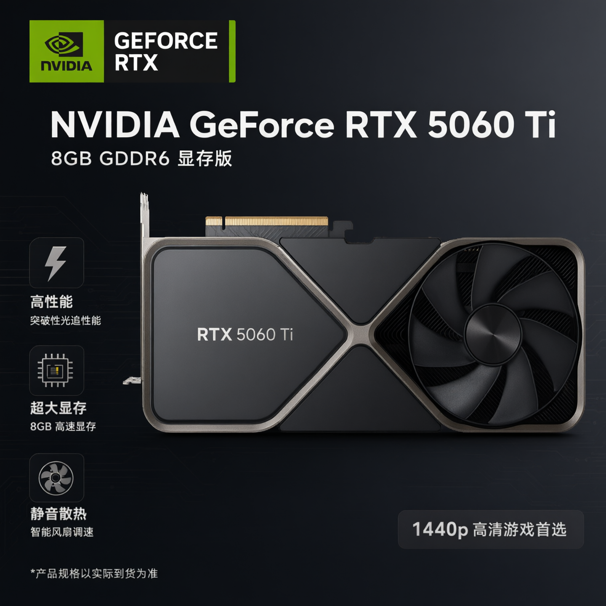
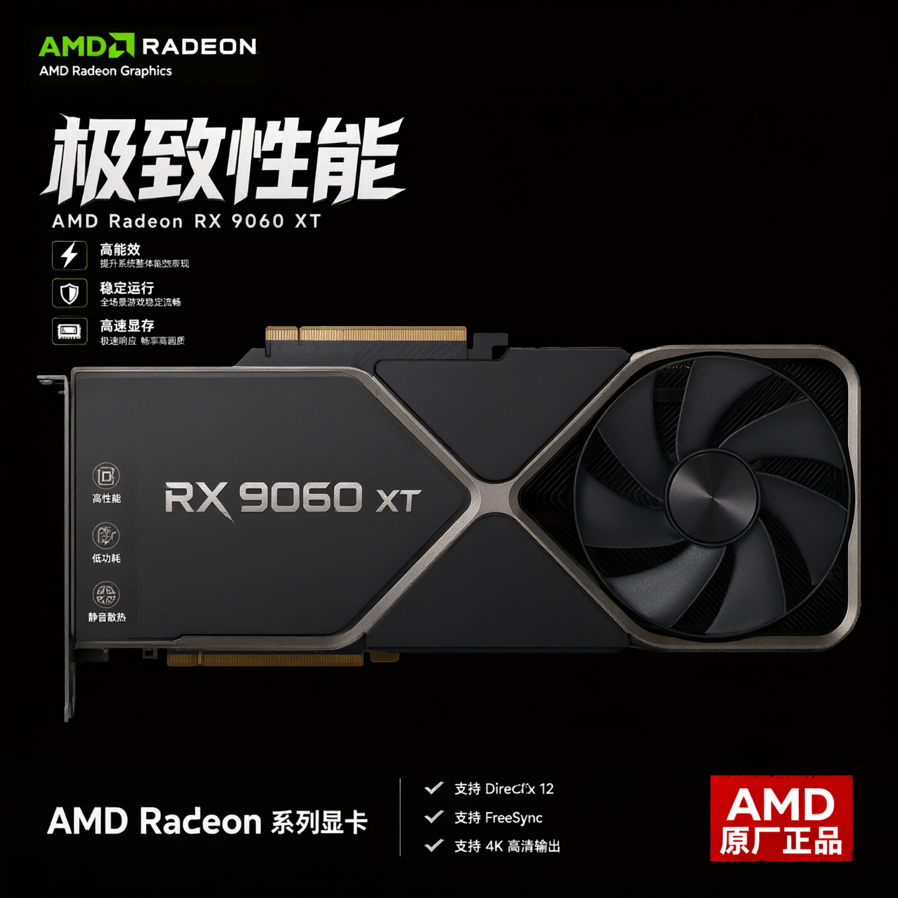

目前，市面上主流的显卡，基本就是 N 卡 RTX 50 系和 A 卡 RX 9000 系。一直到 2026 年下半年，显卡整体还在上涨。
说实在的，年末就不是个入手显卡的好时候。早在 2026 上半年 DRAM/GDDR 就暴涨，显卡现价全面甩开史低。11 月英伟达内部还折腾了一回：掌舵 30 多年的黄仁勋 11 月 12 日辞去总裁、CEO 和董事职务，CFO 克雷斯临时顶上；结果 11 月 23 日董事会又一致通过，让他官复原职。风波是过去了，可英伟达的战略重心也摆到台面上了：扩大 AI、工业、企业、科研这些专业显卡的占比。游戏卡极大可能进一步减产，或者说已经是板上钉钉的事情。往后两年，NVIDIA 桌面游戏卡只会更少、更贵。
至于理由，我觉得有三点：
第一点，就是 30 年来的头一次“断更”：受全球显存短缺影响，英伟达为了保住利润率高达 65% 的数据中心业务，主动砍掉了 30%-40% 的游戏卡产能。2026 一整年没发任何新一代 GeForce，连 RTX 50 Super 都无限期推迟了。
第二，产能倾斜：台积电的先进制程晶圆和 HBM3E 显存产能，优先喂给了 AI 芯片，轮到游戏卡要用的 GDDR7 显存时已经严重不够。
第三，利润驱动：英伟达财报里，游戏业务营收占比已经掉到 8% 左右，数据中心则冲到 88%。对英伟达来说，一片游戏卡晶圆能赚大概 10 万美元，换成 AI 芯片晶圆就是 80-120 万美元。
那 AMD 呢？这会儿 AMD 的市场份额还只是捡英伟达剩下的，尤其在光追这块还差着一大口气。2026 年 9 月，DLSS 5 发布，对 AMD 的 FSR 算是一次降维打击，但也倒逼 AMD 转了方向。DLSS 5 早就不只是“超分辨率”了，已经跨进了神经渲染领域；而 AMD 的 FSR 4.1 / Redstone 进步虽然大，本质还是在“超分与帧生成”这条赛道上追。不过英伟达这一转向，2026 往后反而是 AMD 近些年最好的破局机会。
背景差不多就这样。最近也是逛了不少论坛、比过商城主流的卡，心血来潮写这篇对比。
今天挑了几款卡对比，分三个层级。
我会从用途、核心、显存、功耗/兼容、实测（实测来自各博主的资料，会注明出处和链接）、价格（截止到 2026 年 11 月）这几个维度来比。其中 RTX 4080、RTX 4070 Ti 已经停产，不参与价格对比。
下面是我整理的 9 张显卡跑分全景表。先说清一个最容易搞混的地方：Time Spy 的固定分辨率是 2K（2560×1440），官方的 4K 版本叫 Time Spy Extreme，两套分数差近一倍，混着比就是拿苹果比橘子。所以我把两套并列，下文所有分析一律以 2K 那列为准。
| 显卡 | 显存 | Time Spy（2K）图形分 | Time Spy Extreme（4K）图形分 |
|---|---|---|---|
| RX 9070 XT | 16GB GDDR6 | 约 30,700 | 约 14,600 |
| RTX 4080 | 16GB GDDR6X | 约 28,200 | 约 14,000 |
| RTX 5070 Ti | 16GB GDDR7 | 约 27,900 | 约 13,500 |
| RX 9070 | 16GB GDDR6 | 约 26,800 | 约 12,650 |
| RTX 4070 Ti | 12GB GDDR6X | 约 23,200 | 约 11,000 |
| RTX 5070 | 12GB GDDR7 | 约 22,400 | 约 10,700 |
| RX 9070 GRE | 12GB GDDR6 | 约 22,000 | 约 10,400 |
| RX 9060 XT（16GB） | 16GB GDDR6 | 约 16,500 | 约 7,600 |
| RTX 5060 Ti 8G | 8GB GDDR7 | 约 16,000 | 约 7,300 |
表中为公开统计的均值，各站之间差异一般在 ±3% 以内，同一列内可以放心横向比较；部分空数据表示该卡暂无可靠收录。

整体看下来，2026 年的中高端市场，N 卡和 A 卡贴得很紧：论出货份额，NVIDIA 一家独大。据 Jon Peddie Research提供的数据，2025 年 Q4 桌面独显板卡出货 NVIDIA 约 94%、AMD 降到 5%、Intel 约 1%，2026 年才小幅回到 90% / 8% / 2%。但份额是产能和渠道堆出来的，不等于卡更好。落到具体产品上，NVIDIA 在光追、AI 生态、驱动适配上仍然领先，AMD 靠 RDNA 4 发力，纯光栅跑分已经追到并排，有几张卡还能压过 N 卡。AI 热潮把产能抽向数据中心 GPU，NVIDIA 仍是默认选择，但 AMD 已经不能当空气看了。所以，还是分析下这几张卡的具体数据。
旗舰与次旗舰之争：A 卡纯光栅登顶
纯光栅的结果有点意外：RX 9070 XT 以约 30,700 分拿下这九张卡的头名，比 RTX 4080（约 28,200 分）高出一截，RTX 5070 Ti（约 27,900 分）排在后面——上代旗舰 4080 反而压着新出的 5070 Ti 一头，核心规模的老底子还在。RDNA 4 的进步确实兑现了：光比传统光栅，AMD 已经能跟 N 卡正面掰手腕。不过 Time Spy 不测光追和 AI 超分，后面的游戏实测里，N 卡会在这些项目上扳回来。
主流甜点级对决：AMD 阵营厚度占优
RX 9070（约 26,800 分）的纯光栅直逼层级一的 RTX 5070 Ti，跟自家大哥 9070 XT 也只差一成多；RTX 5070（约 22,400 分）和 RX 9070 GRE（约 22,000 分）咬得死紧，基本一条水平线；已经停产的 RTX 4070 Ti（约 23,200 分）还能稳稳压住这一档，老旗舰的底子还在。主流价位上 AMD 的产品线更厚实，性价比优势在这一档尤其明显。
入门高端：8GB / 16GB 梯队打平
RX 9060 XT 16G（约 16,500 分）和 RTX 5060 Ti 8G（约 16,000 分）就差 4% 以内，公开跑分基本分不出胜负——可一个是 16GB 显存、一个是 8GB，后面的《无主之地4》实测会说明，这一代游戏里显存容量往往比跑分数字更要命。
当然跑分不等于实际体验。跑分体现不了显存容量、光追性能，也体现不了 DLSS/FSR 这类 AI 超分的作用。举个例子，8GB 显存的卡在 4K 下很容易爆显存，而 NVIDIA 在光追和 AI 算力上的生态优势，纯光栅跑分里也看不出来。所以真到买的时候，除了跑分，还得看你要玩什么、开多高分辨率、需不需要 AI 创作这类生产力场景，综合着来比较。
RTX 4080 / RTX 5070 Ti / RX 9070 XT 基本参数
| 参数项目 |  RTX 4080 |
 RTX 5070 Ti |
 RX 9070 XT |
|---|---|---|---|
| 架构 | Ada Lovelace | Blackwell | RDNA 4 |
| 制程工艺 | 台积电 4N（5nm 定制） | 台积电 4N | 台积电 N4 / 4nm |
| 核心代号 | AD103 | GB203 | Navi 48 |
| CUDA / 流处理器 | 9728 | 8960 | 4096 流处理器 |
| 光追单元 | 76 个第三代 RT Core | 70 个第四代 RT Core | 64 个第三代 Ray Accelerator |
| AI 加速单元 | 304 个第四代 Tensor Core | 280 个第五代 Tensor Core | 128 个第二代 AI 加速器 |
| 基础频率 | 2205 MHz | 2295 MHz | 1660 MHz（游戏频率 2400 MHz） |
| 加速频率 | 2505 MHz | 2452 MHz | 2970 MHz |
| 显存容量 | 16GB | 16GB | 16GB |
| 显存类型 | GDDR6X | GDDR7 | GDDR6 |
| 显存位宽 | 256-bit | 256-bit | 256-bit |
| 显存速率 | 22.4 Gbps | 28 Gbps | 20 Gbps |
| 显存带宽 | 716.8 GB/s | 896 GB/s | 640 GB/s |
| L2 缓存 | 64MB | 48MB | 64MB（Infinity Cache） |
| TGP / TDP 功耗 | 320W | 300W | 304W |
| 推荐电源 | 750W | 750W | 750W |
| 供电接口 | 16-pin（12VHPWR） | 16-pin（12V-2x6） | 8-pin × 2 |
| PCIe 接口 | PCIe 4.0 × 16 | PCIe 5.0 × 16 | PCIe 5.0 × 16 |
| 显示输出 | HDMI 2.1b + DP 1.4a | HDMI 2.1b + DP 2.1b | HDMI 2.1b + DP 2.1a |
| 首发时间 | 2022 年 11 月 | 2025 年 2 月 | 2025 年 3 月 |
1. 核心规模：RTX 4080 最大，RX 9070 XT 靠高频和架构效率
RTX 4080 有 9728 个 CUDA 核心，是三款里规模最大的，FP32 峰值性能约 48.74 TFLOPS，略高于 RX 9070 XT 的 48.7 TFLOPS，也高过 RTX 5070 Ti 的 43.94 TFLOPS。
RTX 5070 Ti 的 CUDA 反而少一些，只有 8960 个，靠 Blackwell 架构、更高的显存带宽和新版 Tensor Core 把规模差距补了回来。
RX 9070 XT 的流处理器才 4096 个，看着远不如两张 N 卡，但这数不能跟 CUDA 直接划等号。RDNA 4 的单核效率、频率策略、Infinity Cache 设计都不同，AMD 走的是高频 + 新架构 + 大缓存的路子，不是傻堆核心。
2. 显存子系统：RTX 5070 Ti 带宽最强，RX 9070 XT 带宽最低
三款都是 16GB / 256-bit，可显存类型差得远：
落到体验上：
3. 光追硬件：RTX 5070 Ti 最新，RTX 4080 成熟，RX 9070 XT 进步明显
光追这块，三款卡的差距比纯光栅更大。
RTX 5070 Ti 上的是第四代 RT Core，官方说光追算力提升约 44%。它强的不只是光追单元数量，还有 NVIDIA 在光追降噪、DLSS 重建、驱动优化、游戏适配上的成熟度。
RTX 4080 用第三代 RT Core，架构比 5070 Ti 老一代，但核心规模大，光追依旧很强，高画质光追游戏里表现稳定。
RX 9070 XT 是 RDNA 4 的 64 个光追加速器，比上代 A 卡进步巨大，早不是过去那种"光追明显偏科"的 A 卡了。在不少支持 FSR 4 / FSR 4.1 的游戏里，光追体验已经能摸到 RTX 5070 Ti 的边。
不过路径追踪、重度光追、复杂反射、全局光照这些场景，还是 NVIDIA 更稳。
4. AI 算力：RTX 5070 Ti 最强，RX 9070 XT 补强但生态仍落后
AI 和超分，是三款卡差距最大的地方。
RTX 5070 Ti 是第五代 Tensor Core，AI 推理性能提升约 119%，还支持 DLSS 4 多帧生成，AI 超分、帧生成、AI 生图、视频编码、本地推理上都有明显优势。
RTX 4080 是第四代 Tensor Core，支持 DLSS 3 和部分新特性，AI 硬件的代际比 5070 Ti 低一档。
RX 9070 XT 配 128 个 AI 加速器，支持 FP8 加速，峰值 FP8 矩阵性能能到 389 TFLOPS，开结构化稀疏后 779 TFLOPS。AMD 这次在 AI 硬件上确实下本了，FSR 4 / FSR 4.1 也比过去的 FSR 3 强不少。
但差距不止在硬件，更在生态。
DLSS 支持的游戏更多、画质更稳、帧生成更成熟；FSR 虽然开放，游戏覆盖和画质一致性还是差一截。
5. 功耗与供电：三者接近，但 RX 9070 XT 装机更友好
三款公版功耗都在 300W-320W：
推荐电源基本都在 750W 左右。
供电接口体验不一样：
RX 9070 XT 对老电源、传统装机更友好，不用转接线；两张 N 卡更依赖 16-pin，装机时记得把插头怼紧。
6. 接口规格：RTX 5070 Ti 和 RX 9070 XT 更新
RTX 5070 Ti 和 RX 9070 XT 都支持 PCIe 5.0，显示输出也更新：
要是你接 4K 高刷屏、8K 屏，或者以后想升高带宽显示设备，5070 Ti 和 9070 XT 的接口更有余量。
7. 市场与定位差异
RTX 4080 是 2022 年的高端旗舰底子，核心规模大、传统光栅强，但架构、AI 硬件、接口都算不上新了。
RTX 5070 Ti 是 Blackwell 的主流高端卡，首发 6299 元，主打 2K 高刷、4K 游戏、DLSS 4 和 AI 生产力，胜在架构新、带宽高、AI 强、DLSS 生态熟。
RX 9070 XT 是 AMD RDNA 4 的高端主力，首发 4999 元起，主打高性能光栅、补强后的光追、FSR 4，价格更友好。优势是性价比和传统游戏性能，短板是 AI 生态、路径追踪和显存带宽。
理论参数只能说明纸面实力，真正决定体验的还是在具体游戏里的表现。下面从 1080P、2K、4K 三档分辨率，以及光追开关、AI 超分四个维度，对 RTX 4080、RTX 5070 Ti、RX 9070 XT 进行横向对比。
说明：以下帧率为综合测试环境下的参考值，不同 CPU、驱动版本、画质预设会有浮动，主要用于判断相对强弱关系。
1. 1080P：三款卡都轻松，差距被 CPU 抹平
| 游戏 / 场景 | RTX 4080 | RTX 5070 Ti | RX 9070 XT |
|---|---|---|---|
| 《CS2》高画质 | 约 430-470 FPS | 约 405-540 FPS | 约 437-573 FPS |
| 《地平线5》高画质 | 约 210-230 FPS | 约 200-220 FPS | 约 190-210 FPS |
| 《古墓丽影：暗影》高画质 | 约 280-300 FPS | 约 270-290 FPS | 约 250-270 FPS |
| 《荒野大镖客2》高画质 | 约 170-185 FPS | 约 160-175 FPS | 约 152-165 FPS |
| 《无主之地3》高画质 | 约 165-180 FPS | 约 155-170 FPS | 约 160-175 FPS |
| 《巫师3》重制版 最高画质 | 约 160 FPS | 约 153 FPS | 约 142 FPS |
| 《黑神话：悟空》高画质 | 约 95-105 FPS | 约 90-100 FPS | 约 97 FPS |
| 《影之刃零》最高画质 | 约 91 FPS | 约 90 FPS | 约 78 FPS |
1080P 分辨率下，三款卡都属于性能过剩状态。传统光栅游戏里，帧率往往被 CPU 和游戏引擎限制，RTX 4080 与 RTX 5070 Ti 差距很小，RX 9070 XT 在《CS2》《无主之地3》这类游戏中甚至能反超。
但《影之刃零》是个例外。这款虚幻引擎5动作游戏对显卡压力较大，1080P 原生最高画质下三款卡都只能跑到 78-91 FPS，说明它对硬件的要求已经接近 3A 大作的 2K 水准。
2. 2K：三款卡最合适的战场
| 游戏 / 场景 | RTX 4080 | RTX 5070 Ti | RX 9070 XT |
|---|---|---|---|
| 《地平线5》高画质 | 约 205 FPS | 约 188-201 FPS | 约 175-204 FPS |
| 《古墓丽影：暗影》高画质 | 约 248 FPS | 约 234-253 FPS | 约 190-266 FPS |
| 《荒野大镖客2》高画质 | 约 165 FPS | 约 161 FPS | 约 178-181 FPS |
| 《无主之地3》高画质 | 约 140 FPS | 约 131 FPS | 约 162-168 FPS |
| 《巫师3》重制版 最高画质 | 约 108 FPS | 约 102 FPS | 约 118 FPS |
| 《黑神话：悟空》高画质 | 约 76 FPS | 约 68-71 FPS | 约 57-59 FPS |
| 《影之刃零》最高画质 | 约 68 FPS | 约 68 FPS | 约 62 FPS |
2K 是三款卡定位最匹配的分辨率，也是差异最容易被看出来的档位。RX 9070 XT 在传统光栅游戏（《荒野大镖客2》《无主之地3》《巫师3》《古墓丽影：暗影》）里能领先两张 N 卡，这是 RDNA 4 架构和 64MB Infinity Cache 的功劳。
但优化偏向 N 卡的游戏里情况反转：《黑神话：悟空》RX 9070 XT 只有 57-59 FPS，落后 RTX 5070 Ti 的 68-71 FPS。《影之刃零》原生差距不大（62-68 FPS），但一开光追 RX 9070 XT 直接掉到约 43 FPS，跌破 60 FPS 流畅线，而两张 N 卡还能维持在 55 FPS 左右——光追负载会明显放大 AMD 的差距。
3. 4K：原生压力陡增，《影之刃零》跌破流畅线
| 游戏 / 场景 | RTX 4080 | RTX 5070 Ti | RX 9070 XT |
|---|---|---|---|
| 《地平线5》高画质 | 约 150 FPS | 约 137-149 FPS | 约 124-146 FPS |
| 《古墓丽影：暗影》高画质 | 约 148 FPS | 约 126-132 FPS | 约 108-120 FPS |
| 《荒野大镖客2》高画质 | 约 110 FPS | 约 105 FPS | 约 119 FPS |
| 《无主之地3》高画质 | 约 98 FPS | 约 95 FPS | 约 97 FPS |
| 《巫师3》重制版 最高画质 | 约 64 FPS | 约 61 FPS | 约 57 FPS |
| 《黑神话：悟空》高画质 | 约 66 FPS | 约 63 FPS | 约 61 FPS |
| 《影之刃零》最高画质 | 约 39 FPS | 约 39 FPS | 约 36 FPS |
4K 原生下 RX 9070 XT 的 Infinity Cache 仍能发挥作用，《古墓丽影：暗影》《荒野大镖客2》里甚至能领先。但《影之刃零》是明显分水岭：4K 原生最高画质三款卡都只有 36-39 FPS，全部无法流畅运行；开启路径追踪后更是跌到 20-25 FPS，基本失去可玩性，必须依赖 AI 超分。
4. 4K 光追 / 路径追踪 + AI 超分：差距最大，架构代差显现
| 游戏 / 场景 | RTX 4080 | RTX 5070 Ti | RX 9070 XT |
|---|---|---|---|
| 《赛博朋克2077》光追 + 超分 | 约 120-135 FPS | 约 140-162 FPS | 约 105-120 FPS |
| 《瘟疫传说：安魂曲》光追 + 超分 | 约 80-90 FPS | 约 90-100 FPS | 约 70-80 FPS |
| 《心灵杀手2》光追 + 超分 | 约 70-80 FPS | 约 85-95 FPS | 约 60-70 FPS |
| 《黑神话：悟空》光追 + 超分 | 约 75-85 FPS | 约 80-90 FPS | 约 65-75 FPS |
| 《影之刃零》路径追踪 原生 | 约 25 FPS | 约 25 FPS | 约 20 FPS |
| 《影之刃零》4K 路径追踪 + 超分 | 约 82 FPS | 约 160-217 FPS | 约 117 FPS |
这一档差距最大，最能看出架构代差。《影之刃零》路径追踪是最高光追等级，一开就掉约 55% 性能，4K 原生路径追踪只剩 20-25 FPS，根本没法原生跑。开了 AI 超分之后，局面就变了：
这是 RTX 4080 最尴尬的地方：传统光栅还是最强或并列最强，可到了最吃 AI 硬件的新一代光追场景，反而被两张新卡超了过去。
一句话收尾：只玩传统游戏，RX 9070 XT 性价比最高；要 4K 光追和 AI 超分的完整体验，RTX 5070 Ti 是唯一答案；RTX 4080 则是性能还在、但技术代际已经落后半拍的老将。
这三款都是 2025 年上市的主流卡。整理口径跟层级一保持一致：先用跑分和官方参数定位置，再按 1080P、2K、4K 三档分别列原生光栅帧数——这三张表只放一个变量，不开光追、不开超分，可以横向比；光追、路径追踪和 AI 超分全部放到最后一张表里单独看。
说明：帧率来自同一套测试平台（Ryzen 7 9800X3D、DDR5-6200，《影之刃零》Ultra /《无主之地4》Badass 预设，原生渲染、不开超分和帧生成）。空白格子表示没找到同口径数据，不做推算。
1. 已知数据：3DMark 跑分与定位
| 项目 | RX 9070 | RTX 5070 | RX 9070 GRE |
|---|---|---|---|
| 3DMark Time Spy 图形分 | 约 26,800 分 | 约 22,400 分 | 约 22,000 分 |
| 公开 Time Spy Extreme 图形分 | 约 12,650 分 | 约 10,700 分 | 约 10,400 分 |
纯光栅跑分顺序是 RX 9070（约 26,800）＞ RTX 5070（约 22,400）≈ RX 9070 GRE（约 22,000）。RX 9070 的图形分已经逼近层级一的 RTX 5070 Ti，这是 RDNA 4 中端的真实实力；RTX 5070 和 RX 9070 GRE 只差 2% 左右，胜负手在显存、超分生态和价格，不在跑分。
2. 基本参数（官方规格）
| 参数项目 |  RX 9070 |
 RTX 5070 |
 RX 9070 GRE |
|---|---|---|---|
| 架构 / 核心代号 | RDNA 4 / Navi 48 | Blackwell / GB205 | RDNA 4 / Navi 48 XL |
| CUDA / 流处理器 | 56 CU / 3584 流处理器 | 6144 CUDA | 48 CU / 3072 流处理器 |
| 显存容量 / 类型 / 位宽 | 16GB GDDR6 / 256-bit | 12GB GDDR7 / 192-bit | 12GB GDDR6 / 192-bit |
| 显存速率 / 带宽 | 20 Gbps / 640 GB/s | 28 Gbps / 672 GB/s | 18 Gbps / 432 GB/s |
| TGP / 推荐电源 / 供电接口 | 220W / 650W / 2×8-pin | 250W / 650W / 16-pin（附 2×8-pin 转接） | 220W / 650W / 2×8-pin |
| PCIe / 显示输出 | PCIe 5.0 x16 / DP 2.1a + HDMI 2.1b | PCIe 5.0 x16 / DP 2.1b + HDMI 2.1b | PCIe 5.0 x16 / DP 2.1a + HDMI 2.1b |
| 国行首发价（2025 年） | ¥4,499 | ¥4,599 | ¥4,199 |
以上为 AMD / NVIDIA 官方参考规格，非公版型号的频率、供电与散热会有差异。国行首发价取自中国官网及首发报道，不代表 2026 年 11 月现价；RX 9070 GRE 为中国特供型号，2025 年 4 月上架、4,199 元起。
3. 1080P：三卡都能跑，光栅差距不大
| 游戏 / 场景 | RX 9070 | RTX 5070 | RX 9070 GRE |
|---|---|---|---|
| 《影之刃零》最高画质 | 71.4 FPS | 73.6 FPS | 64.4 FPS |
| 《无主之地4》最高画质 | 59.6 FPS | 49.4 FPS |
1080P 下三卡都够用。《影之刃零》纯光栅里 RTX 5070 和 RX 9070 基本持平（73.6 对 71.4 FPS），RX 9070 GRE 落后约 10%。《无主之地4》换了个强弱关系：RX 9070 反超 RTX 5070 约 21%（59.6 对 49.4 FPS），说明这一档的胜负更多看游戏适配，不看跑分。RX 9070 GRE 没找到该游戏同口径数据，留空。
4. 2K：目标分辨率，原生全线跌破 60 帧
| 游戏 / 场景 | RX 9070 | RTX 5070 | RX 9070 GRE |
|---|---|---|---|
| 《影之刃零》最高画质 | 56.4 FPS | 53.5 FPS | 49.2 FPS |
| 《无主之地4》最高画质 | 41.8 FPS | 33.8 FPS |
2K 是这三张卡的目标分辨率，可《影之刃零》最高画质原生没一张能稳过 60 帧（56.4 / 53.5 / 49.2 FPS），最靠近 60 帧守门员的是 RX 9070。《无主之地4》压力更大，RX 9070 领先 RTX 5070 约 24%（41.8 对 33.8 FPS）。这一档要稳 60 帧，基本都得开超分。
5. 4K：原生不可玩，超分成必选项
| 游戏 / 场景 | RX 9070 | RTX 5070 | RX 9070 GRE |
|---|---|---|---|
| 《影之刃零》最高画质 | 31.4 FPS | 30.1 FPS | 27.5 FPS |
| 《无主之地4》最高画质 | 21.8 FPS | 15.2 FPS |
4K 原生对这三张卡都不可玩，全在 35 FPS 以下，超分不是可选项而是必选项。《无主之地4》里 RTX 5070 只剩 15.2 FPS，跟 RX 9070（21.8 FPS）拉开约 43%——这游戏对显存和驱动极敏感，把两者差距放大了。RX 9070 GRE 同样没找到同口径数据，留空。
6. 光追 / 路径追踪 + AI 超分：代际差在这里
| 项目 / 场景 | RX 9070 | RTX 5070 | RX 9070 GRE |
|---|---|---|---|
| 光追架构 / 超分与帧生成上限 | RDNA 4 · FSR 4，帧生成 2X | Blackwell · DLSS 4.5，多帧生成 6X | RDNA 4 · FSR 4，帧生成 2X |
| 《影之刃零》1080P + 光追（原生） | 53.6 FPS | 63.4 FPS | 48.3 FPS |
| 《影之刃零》2K + 光追（原生） | 42.8 FPS | 44.0 FPS | 34.4 FPS |
| 《影之刃零》4K + 光追（原生） | 24.3 FPS | 23.7 FPS | 19.0 FPS |
| 《影之刃零》4K 路径追踪 + 超分 / 帧生成 | 173 FPS（DLSS 6X，1% Low 117） | ||
| 《影之刃零》1440P 路径追踪 + 6X 帧生成 | 245 FPS |
光追原生帧数里有个规律：分辨率越高，RTX 5070 的优势越小——1080P 领先 RX 9070 约 18%，2K 只领先约 3%，到 4K 反而略低于 RX 9070（23.7 对 24.3 FPS）。重负载把三张卡的差距抹平了；RX 9070 GRE 则全程落后，4K 光追只剩 19.0 FPS。开超分后，RTX 5070 的领先收窄到约 6-9%。
真正拉开差距的是帧生成这一档。RTX 5070 支持 DLSS 4.5 多帧生成最高 6X，《影之刃零》4K 路径追踪 + DLSS 6X 实测 173 FPS（1% Low 117），1440P 6X 到 245 FPS；RX 9070 和 GRE 的 FSR 帧生成只到 2X，支持的游戏也少，同口径实测没找到，表里留空。要注意这是显示帧率，操作延迟仍靠 Reflex 一类技术压住。
显存也是这一档的隐形门槛：《影之刃零》4K 光追约需 11GB、路径追踪约 13GB、多帧生成约 14GB。这一层是 12GB / 16GB，比层级三的 8GB 卡从容得多——多帧生成本身要吃显存，8GB 卡开了反而更容易爆。
一句话收尾：只玩光栅，RX 9070 帧数最稳、显存最大；想要光追 + 多帧生成的完整体验，这一层只有 RTX 5070 能给；RX 9070 GRE 便宜但光追全面落后，适合预算优先、不开光追的人。
本层级沿用同样的结构：跑分与参数定位置，1080P / 2K / 4K 三张表只列原生光栅，光追、路径追踪和 AI 超分单独放最后一张表。型号统一写全（RTX 5060 Ti 8G / RX 9060 XT）；RTX 4070 Ti 已停产、不参与价格对比；RX 9060 XT 有 8GB / 16GB 两个版本，两版数据并列标注。
说明：帧率口径与层级一、层级二一致（Ryzen 7 9800X3D、DDR5-6200，《影之刃零》Ultra /《无主之地4》Badass 预设，原生渲染、不开超分和帧生成），可以横向比。最后一张表里的超分 / 帧生成是单卡实测，档位写在格子里，只看趋势。
1. 已知数据：3DMark 跑分与定位
| 项目 | RTX 4070 Ti | RTX 5060 Ti 8G | RX 9060 XT |
|---|---|---|---|
| 3DMark Time Spy 图形分 | 约 23,200 分 | 约 16,000 分（8GB） | 约 16,300 分（16GB 约 16,500） |
| 公开 Time Spy Extreme 图形分 | 约 10,970 分 | 约 7,260 分 | 约 7,230 分（16GB）/ 6,940（8GB） |
跑分顺序是 RTX 4070 Ti（约 23,200）＞ RX 9060 XT 16G（约 16,500）≈ RTX 5060 Ti 8G（约 16,000）。4070 Ti 凭老旗舰级核心规模领先整整一档；9060 XT 和 5060 Ti 跑分相差不到 4%，公开数据分不出高下，胜负手在显存容量和游戏适配。
2. 基本参数（官方规格）
| 参数项目 |  RTX 4070 Ti |
 RTX 5060 Ti 8G |
 RX 9060 XT |
|---|---|---|---|
| 架构 / 核心代号 | Ada Lovelace / AD104-400 | Blackwell / GB206-300 | RDNA 4 / Navi 44 |
| CUDA / 流处理器 | 7680 CUDA | 4608 CUDA | 32 CU / 2048 流处理器 |
| 显存容量 / 类型 / 位宽 | 12GB GDDR6X / 192-bit | 8GB GDDR7 / 128-bit | 8GB 或 16GB GDDR6 / 128-bit |
| 显存速率 / 带宽 | 21 Gbps / 504 GB/s | 28 Gbps / 448 GB/s | 20 Gbps / 320 GB/s |
| TGP / 推荐电源 / 供电接口 | 285W / 700W / 16-pin | 180W / 600W / 1×8-pin | 150W（8G）/ 160W（16G）/ 550-650W / 1×8-pin |
| PCIe / 显示输出 | PCIe 4.0 x16 / 3×DP 1.4a + HDMI 2.1 | PCIe 5.0 x8 / 3×DP 2.1b + HDMI 2.1b | PCIe 5.0 x16 / DP 2.1a + HDMI 2.1b |
| 国行首发价 | ¥6,499（2023-01，已停产，不参与价格对比） | ¥3,199（2025-04） | ¥2,499（8G）/ ¥2,899（16G）（2025-06） |
以上是 AMD / NVIDIA 官方参考规格，非公版型号会有差异。RTX 4070 Ti 于 2023 年 1 月以 6,499 元首发、现已停产；RTX 5060 Ti 8G 和 RX 9060 XT 都是 2025 年的 8GB 级主流卡，后者另有 16GB 版。要跑 4K / 高画质，优先选 16GB。
3. 1080P：4070 Ti 领先一档，8GB 卡开始吃力
| 游戏 / 场景 | RTX 4070 Ti | RTX 5060 Ti 8G | RX 9060 XT |
|---|---|---|---|
| 《影之刃零》最高画质 | 78.7 FPS | 58.0 FPS | 52.1 FPS（8G / 16G 相同） |
| 《无主之地4》最高画质 | 59.1 FPS | 25.6 FPS | 8G 33.2 / 16G 40.6 FPS |
1080P 下 RTX 4070 Ti 凭老旗舰级核心规模仍是本层第一（78.7 FPS）。RTX 5060 Ti 8G 和 RX 9060 XT 在《影之刃零》里分别是 58.0 和 52.1 FPS，差距不大；可《无主之地4》反了过来——RX 9060 XT 16G（40.6 FPS）明显好于 RTX 5060 Ti 8G（25.6 FPS）。这游戏显存占用极高，1080P 就已经开始惩罚 8GB 卡了。
4. 2K：《无主之地4》把 8GB 打回原形
| 游戏 / 场景 | RTX 4070 Ti | RTX 5060 Ti 8G | RX 9060 XT |
|---|---|---|---|
| 《影之刃零》最高画质 | 57.3 FPS | 41.7 FPS | 8G 37.0 / 16G 37.7 FPS |
| 《无主之地4》最高画质 | 39.9 FPS | 10.4 FPS | 8G 16.9 / 16G 26.7 FPS |
2K 下 RTX 4070 Ti 是本层唯一接近 60 帧的（《影之刃零》57.3 FPS）。《无主之地4》里 RTX 5060 Ti 8G 掉到 10.4 FPS——这是 8GB 显存在 2K 以上耗尽导致的，帧率已经不代表 GPU 算力了；RX 9060 XT 16G 的 26.7 FPS 也只能勉强玩，8G 版更低到 16.9 FPS。
5. 4K：全线不可玩，只能靠超分
| 游戏 / 场景 | RTX 4070 Ti | RTX 5060 Ti 8G | RX 9060 XT |
|---|---|---|---|
| 《影之刃零》最高画质 | 31.1 FPS | 19.9 FPS | 8G 18.2 / 16G 20.6 FPS |
| 《无主之地4》最高画质 | 19.4 FPS | 4.9 FPS | 8G 8.4 / 16G 13.3 FPS |
4K 原生对这一层三卡全都不可玩（30 FPS 以下），必须靠超分和帧生成。《无主之地4》4K 下 RTX 5060 Ti 8G 只有 4.9 FPS，在 30 款卡的横评表里跟 RTX 5060 并列垫底，同样是 8GB 显存耗尽；RX 9060 XT 16G（13.3 FPS）和 RTX 4070 Ti（19.4 FPS）是这一档相对好的选择。
6. 光追 / 路径追踪 + AI 超分：新技术很强，但显存是天花板
| 项目 / 场景 | RTX 4070 Ti | RTX 5060 Ti 8G | RX 9060 XT |
|---|---|---|---|
| 架构 / 超分与帧生成上限 | Ada Lovelace · DLSS 3，最高 2X | Blackwell · DLSS 4.5，多帧生成 6X | RDNA 4 · FSR 4 / 4.1，帧生成 2X |
| 《影之刃零》1080P + 光追（原生） | 66.4 FPS | 49.7 FPS | 8G 36.7 / 16G 38.0 FPS |
| 《影之刃零》2K + 光追（原生） | 46.4 FPS | 33.7 FPS | 8G 24.9 / 16G 26.1 FPS |
| 《影之刃零》4K + 光追（原生） | 24.4 FPS | 13.4 FPS | 8G 9.0 / 16G 14.3 FPS |
| 《影之刃零》1080P 最高画质 + 超分 / 帧生成 | 62 → 86 → 349 FPS（DLSS 质量 + 6X） | 56 → 82 → 155 FPS（FSR 质量 + FG，8G） | |
| 《影之刃零》4K 路径追踪 + 超分 / 帧生成 | 约 60+ FPS（DLSS 2X） | PT 原生 7 → 6X 27；超分平衡 + 6X 88 FPS | 约 31 FPS（超分 + FG，16G） |
先看技术档位：RTX 4070 Ti 是 Ada Lovelace（第三代 RT Core + 第四代 Tensor Core），只支持 DLSS 3 和最高 2X 帧生成；RTX 5060 Ti 8G 是 Blackwell，支持 DLSS 4 / 4.5 多帧生成最高 6X；RX 9060 XT 是 RDNA 4 / Navi 44，支持 FSR 4 / 4.1，帧生成只到 2X。光追原生帧数里 4070 Ti 全程第一，5060 Ti 8G 在《影之刃零》光追下领先 9060 XT 约 25-35%。
帧生成能把原本玩不了的场景拉进流畅区：5060 Ti 8G 的《影之刃零》1080P 原生约 58-62 FPS，DLSS 质量档约 86，质量 + 6X 约 349 FPS；1080P 路径追踪原生 47、2X 88、6X 229，2K 原生 17、6X 91，4K 超分平衡 + 6X 88 FPS。9060 XT 则是 1080P 原生约 52-56、FSR 质量约 82、质量 + FG 约 155（8G 版）；16G 版在 1440P 领先 5060 Ti 8G 约 7.4%、4K 领先约 42.8%，后者一部分原因正是 8G 卡爆显存。表里两行超分数据是单卡实测、档位写在格子里，只看趋势，不跟上面的原生帧数直接换算。
显存是这一层的共同天花板：《影之刃零》4K 光追约需 11GB、路径追踪约 13GB、多帧生成约 14GB，《无主之地4》2K 以上 8GB 卡直接爆显存。多帧生成堆高的是显示帧率，操作延迟还得靠 Reflex 一类技术压，8GB 卡更没有余量。
一句话收尾：这一层最该记住的是「别买 8GB」。RTX 5060 Ti 8G 纸面技术最新、6X 帧生成能把帧率堆得很高，可显存一爆就归零；RX 9060 XT 16G 反而更稳；RTX 4070 Ti 老旗舰光栅底子还在，但 DLSS 3 把帧生成上限锁死在 2X，属于性能还在、技术代际落后半拍。
先把丑话说在前面：这轮行情里，同一张卡问三家店能报出三个价，上午的报价下午就作废。所以下面的数字只代表我采集当天的快照，下单前一定自己再核一遍。RTX 4080 和 RTX 4070 Ti 已经停产，市面上只剩二手和少量库存卡，不放进这次对比。
| 显卡 | 国行首发价 | 历史最低 | 当前全网最低 | 较首发价 |
|---|---|---|---|---|
| RTX 5070 Ti | ¥6,299 | ¥5,733 | 约 ¥10,200 | +62% |
| RX 9070 XT | ¥4,999 | ¥3,848 | 约 ¥6,049 | +21% |
| RX 9070 | ¥4,499 | ¥3,551 | 约 ¥5,198 | +16% |
| RTX 5070 | ¥4,599 | ¥3,958 | 约 ¥6,899 | +50% |
| RX 9070 GRE | ¥4,199 | ¥2,899 | 约 ¥4,058 | -3% |
| RTX 5060 Ti 8G | ¥3,199 | ¥2,528 | 约 ¥3,199 | 持平 |
| RX 9060 XT 8G | ¥2,499 | ¥1,749 | 约 ¥2,849 | +14% |
| RX 9060 XT 16G | ¥2,899 | ¥2,195 | 约 ¥3,694 | +27% |
规律一眼就能看出来：N 卡溢价普遍比 A 卡狠。5070 Ti 比首发贵了六成，5070 贵了五成；A 卡这边 9070 / 9070 XT 只贵一到两成，GRE 甚至贴着首发价卖——这一篇九张卡里，唯一没怎么涨的就是它。5060 Ti 8G 刚好回到首发价，算是矮子里的将军。
「全网最低」几乎都出自拼多多、抖音的第三方店铺，低价规格库存很少，实际到手价常常比标价高；京东自营报价更贵，但旗舰型号经常直接缺货。历史最低价基本是 2025 年大促时的行情，看看就好，短期内别指望回去。
| 显卡 | 京东自营 | 淘宝 | 拼多多 | 抖音 |
|---|---|---|---|---|
| RTX 5070 Ti | 12,792 | 11,499 | 11,764 | 11,450 |
| RX 9070 XT | 6,699 | 5,999 | 6,099 | 6,139 |
| RX 9070 | 5,299 | 5,290 | 5,250 | 5,349 |
| RTX 5070 | 8,599 | 7,979 | 7,898 | 7,749 |
| RX 9070 GRE | 4,399 | 4,099 | 4,118 | 4,039 |
| RX 9060 XT 16G | 4,199 | 3,779 | 3,599 | 3,499 |
这张表是 11 月 1 日（本轮行情高点）的监测快照，单位元。当时 50 系平均溢价还挂在 74%。到 11 月中旬，中端卡普遍又回落了一截——5070 Ti 全网最低从 11,450 降到 10,200 左右，9070 GRE 一度探到 3,352。但「回落」不等于「回归」，离首发价依然很远。
平台之间的差价规律倒是挺稳定：
同一个平台的价差，这几天经常比平台之间的价差还大——这才是现在最麻烦的地方。
下面是我 11 月 20 日到 24 日从京东、天猫商品页直接抄下来的价（部分是领券后的到手价）。同一个 GPU，不同品牌的散热、频率、用料不一样，价差能拉开一千以上：
| 显卡 | 品牌 / 具体型号 | 平台 | 页面价 |
|---|---|---|---|
| RTX 5070 Ti | 技嘉 WF3 OC 16G | 京东 | ¥12,499（券后） |
| RTX 5070 Ti | 微星 魔龙 TRIO OC 16G | 京东 | ¥12,499（券后） |
| RTX 5070 Ti | 影驰 名人堂 HOF Pro 16G | 京东 | ¥12,999 |
| RX 9070 XT | 盈通 樱瞳水着 OC | 京东 | ¥6,997 |
| RX 9070 XT | 瀚铠 超合金 OC | 京东 | ¥7,099（满减后） |
| RX 9070 XT | 技嘉 白魔鹰 OC ICE | 京东 | ¥7,799 |
| RX 9070 | 迪兰 游荡者 16G | 京东 | ¥6,999 |
| RTX 5070 | 七彩虹 iGame 系列 | 京东 | ¥5,799（活动价） |
| RTX 5070 | 影驰 金属大师 OC | 京东 | ¥7,299 |
| RTX 5070 | 华硕 PRIME OC | 京东 | ¥7,499 |
| RX 9070 GRE | 瀚铠 白合金 OC | 京东 | ¥5,699 |
| RX 9070 GRE | 技嘉 魔鹰 OC | 京东 | ¥5,799 |
| RTX 5060 Ti 8G | 映众 AX X2B | 京东 | ¥4,441（券后） |
| RTX 5060 Ti 8G | 技嘉 魔鹰 OC | 京东 | ¥4,499 |
| RTX 5060 Ti 8G | 微星 魔龙 GAMING OC | 京东 | ¥4,599 |
| RX 9060 XT 8G | 华硕 PRIME OC | 京东 | ¥3,599 |
| RX 9060 XT 16G | 蓝宝石 氮动 | 京东 | ¥5,999 |
几个值得记的点：
还有一条路是二手。闲鱼上 50 系从 10 月底的高点连跌了半个多月，但累计跌幅远小于之前的涨幅——二手 5090 还挂在 3 万上下，新卡渠道撑价、二手投机盘出货，两边的价是脱节的。懂行的可以蹲个人自用卡，小白别碰，保卡、矿卡、翻新卡这个价位段全是坑。
把价格和前文的性能放在一起看，我的看法是这样的：
最后再啰嗦一句：这一节所有价格都是 2026 年 11 月 24 日前后的快照，行情一天一变。下单前，把同一型号在京东、淘宝、拼多多各刷一遍，谁便宜一百是一百。
S U M M A R Y